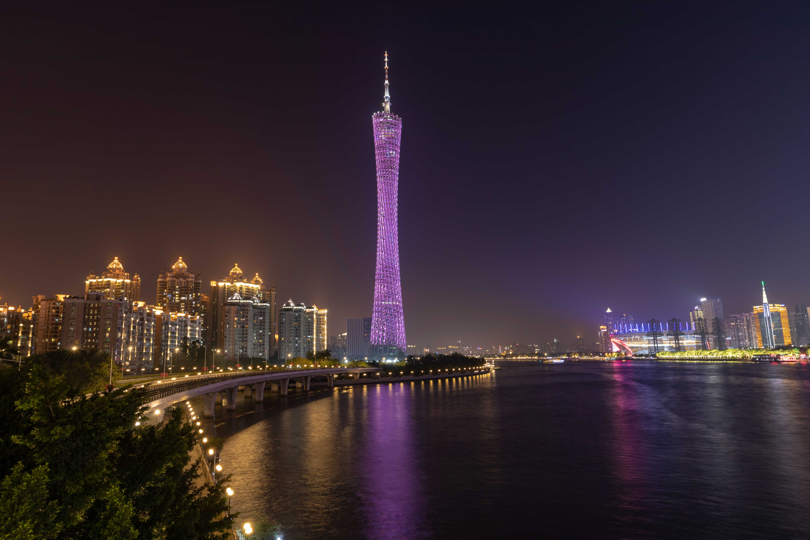
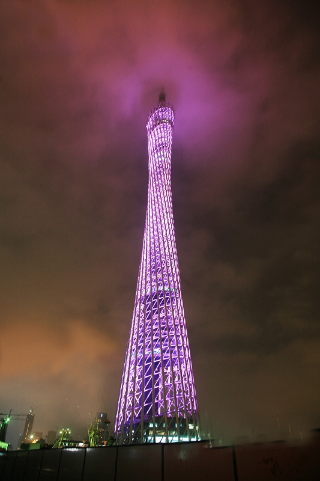

广州塔，又被称为广州新电视塔，俗称小蛮腰，是位于中国广东省广州市的一座标志性建筑物。它的设计风格独特，整体轮廓流畅优雅，就像一位亭亭玉立的女子，腰肢细长，使其成为了广州的一个重要地标和城市象征。
广州塔高约600米，是中国及全球最高的电视塔之一。以其惊人的高度和瑰丽的造型，它俯瞰珠江，成为广州城市天际线上最显著的焦点。塔内除了担当广播电视发射功能外，还拥有观光、餐饮、娱乐、购物等设施。游客可乘坐高速电梯直达观景平台，从而饱览广州城市景观及迷人的珠江美景。
广州塔高约600米，是中国及全球最高的电视塔之一。以其惊人的高度和瑰丽的造型，它俯瞰珠江，成为广州城市天际线上最显著的焦点。塔内除了担当广播电视发射功能外，还拥有观光、餐饮、娱乐、购物等设施。游客可乘坐高速电梯直达观景平台，从而饱览广州城市景观及迷人的珠江美景。
在夜幕降临时，广州塔被灯光照亮，灿烂如同钻石般闪烁，是城市夜景中不可或缺的一部分。人们在珠江两岸或是游船上远观塔的灯光秀，感受到这座现代都市的活力与魅力。无论是白天的蓝天白云背景下，还是夜晚华灯初上的璀璨中，广州塔都显得特别引人注目，成为广州的骄傲和游客必游之地。